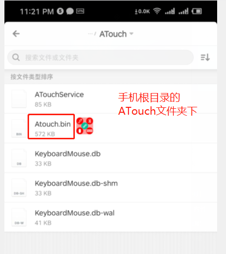
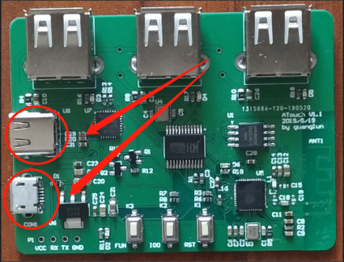
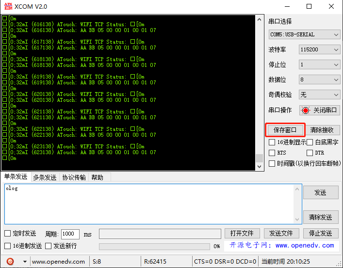

吃鸡开发板 升级方法
开发板升级
1.开发板进入升级模式
如下图，开发板通电后按住左键不放按右键重启板子，此时板子会进入升级模式。

2.手机连接WIFI
手机连接WIFI热点"upgrade",密码123456789
3.手机APP升级
打开手机APP，点击升级设备，选择本地文件升级

选择手机根目录下的/ATouch/ATouch.bin文件升级

升级完成后会提示成功，至此板子固件更新完成
APP升级
目前仅支持手动下载固件安装
获取开发板日志
使用USB线连接板子至电脑，如下两个usb都可以连接。下载CP2102驱动并安装
* 驱动地址
* 串口调试助手

使用串口助手，波特率115200。打开后发送"olog"(注意取消发送回车行)

正常的话接收窗口会接收到LOG，可将LOG保存为文件发送给我调试
